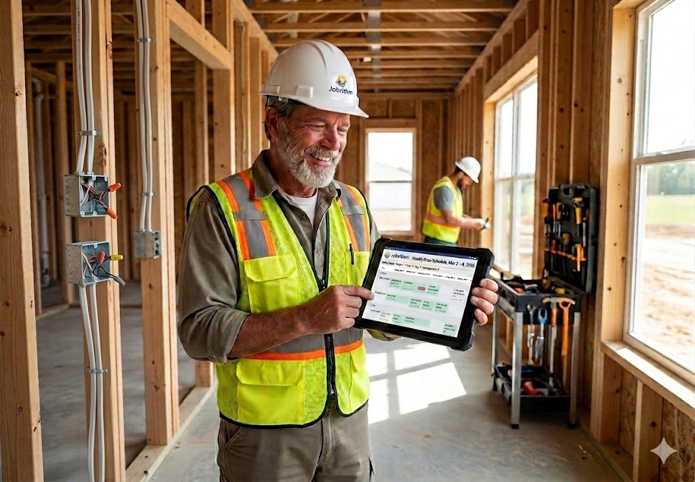
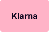

Contratos por trabajo a destajo duplicados por error
Mismo trabajo, varias versiones; no hay una sola fuente de verdad.
Plataforma de operaciones para contratistas residenciales
JobRhythm está pensado para contratistas residenciales en EE. UU.: un solo sistema para operaciones y dinero, para que cobres con trazabilidad (qué, cuánto y por qué obra), mientras cuadrillas, contratos y campo miran la misma información.
Onboarding rápido • Sin tarjeta de crédito • Diseñado para operaciones de campo reales
El problema operativo real

Realidad en campo
Los contratistas residenciales trabajan con márgenes ajustados y, encima, cargan con el estrés de perseguir pagos pendientes. No es un mito: cuando la programación de cuadrillas, los contratos a destajo, el inventario y las cuentas por cobrar viven dispersos en notas y hojas sueltas, la visibilidad cae, el dinero se queda en el camino y la presión se dispara.
A esto se suma que, según investigaciones de la industria, muchos contratistas pierden entre el 15 % y el 25 % del dinero que podrían ganar debido a errores operativos como datos duplicados, materiales extraviados, retrabajos y brechas entre la planificación y la ejecución. La causa raíz rara vez es la carga de trabajo; son las operaciones desconectadas.
Esa combinación de márgenes apretados, angustia por cobrar a tiempo y pérdida silenciosa de dinero es el verdadero problema que JobRhythm viene a resolver.
Mismo trabajo, varias versiones; no hay una sola fuente de verdad.
Sale material del almacén y nadie sabe a qué obra va.
No se puede vincular lo que salió del almacén con lo que se facturó.
Solo para saber qué materiales faltan y dónde.
Asignaciones y direcciones repartidas entre herramientas y memoria.
Sin vínculo con la obra o el cronograma.
El problema no es la carga de trabajo, sino las operaciones desconectadas. Sin una sola fuente de verdad, pierdes dinero en llamadas, materiales y retrabajo, y además te expones al estrés de no cobrar a tiempo. JobRhythm conecta programación, contratos, materiales y cobros en un único flujo para que recuperes tu margen y tu tranquilidad.
Conecta operaciones y finanzas
Conecta operaciones y finanzas. JobRhythm integra la programación de cuadrillas, los contratos por trabajo a destajo, la preparación de materiales, la comunicación en obra y el seguimiento de cada factura en un solo flujo. Desde la planificación hasta que se cobra cada casa, sabes qué se hizo, qué se envió y cuánto debes cobrar, para que dejes de financiar con tu propio margen los fallos de coordinación.
Alivia el estrés operativo. La construcción es una de las industrias con mayor nivel de estrés; al centralizar todo en una sola plataforma desaparece la sensación de ir a ciegas. No tienes que perseguir cobros ni adivinar quién está dónde: la información está ahí, y tu equipo respira. Sabes qué se entregó, qué se facturó y qué falta por cobrar, y tu corazón te lo agradece.
Operativo y financiero, sin improvisación. Menos vueltas, menos material mal encaminado y un control claro de cada obra. Decides con datos que ya están en el sistema, no con suposiciones ni con lo que alguien “recuerda”. Sigues el flujo cronograma → materiales → cobros → beneficio, con un margen que puedes rastrear por casa y menos dinero perdido en improvisaciones.

Transformación que se nota en el margen
Coordinate crews, communities, and jobs with full visibility. Assign work, see who’s where, and keep the week aligned without chasing updates.
Crea y sigue contratos por trabajo a destajo en un solo lugar. Menos duplicados, menos retrabajo manual y un vínculo claro entre obras y pagos.
Track materials, costs, and warehouse movements in one place. Know what’s in stock, what left the yard, and which job it’s tied to.
Centraliza notas de obra, fotos y conversaciones del equipo. La información queda con la obra y el contrato por trabajo a destajo, no enterrada en móviles o chats.
Ve en tiempo real qué pasa en cuadrillas, materiales y obras, y acerca la rentabilidad por casa a tu ritmo semanal. Menos sorpresas y decisiones con datos que puedes explicar.
Responde dos preguntas en un solo lugar: ¿Qué lleva este camión? and ¿Qué equipo tiene esta cuadrilla? . En campo, las herramientas van en el camión y cada camión se asigna a una cuadrilla; ahora ves ambas vistas en un solo sistema.
Un sistema. Una fuente de verdad. Números por obra que puedes defender.
Mira cómo funciona en la práctica: explora las funciones abajo o reserva una demo y revisa tu flujo antes del próximo arranque de obra.
Flujo operativo
Desde programar cuadrillas hasta preparar materiales y seguir la obra en campo, JobRhythm mantiene cada parte de la operación en ritmo.
Asigna trabajos de obra negra, acabados, losa y otros a las cuadrillas correctas con un cronograma semanal claro para operaciones residenciales.
Define alcance, precios y opciones en un contrato por trabajo a destajo para que cada cuadrilla y subcontrata sepa qué incluye el trabajo.
Genera listas de materiales por vivienda o proyecto con favoritos y plantillas reutilizables para que almacén o campo preparen el paquete correcto más rápido.
Mantén toda la comunicación de campo en un solo lugar: fotos, notas y actualizaciones ligadas a la obra, en lugar de mensajes y llamadas dispersas.
Usa cuadros de mando y métricas operativas para seguir avance, movimientos de inventario, totales de contrato y rendimiento del negocio en obras y cuadrillas.
Assign rough, trim, slab, and other field jobs to the right crews using a clear weekly schedule built for residential construction operations.
Set the job scope, pricing, and extra options in a Piece Work Contract so every crew and subcontractor knows exactly what the work includes.
Generate material lists for each house or project using reusable favorites and templates, so the warehouse or field team can prepare the correct package faster.
Keep all field communication in one place with photos, notes, and updates connected directly to the job, instead of scattered messages and phone calls.
Use dashboards and operational metrics to monitor progress, inventory movement, contract totals, and business performance across your jobs and crews.
Mira cómo encaja JobRhythm en tu operación
Reservar demoFunciones clave
Todo lo que campo y oficina necesitan para llevar las operaciones residenciales desde una sola plataforma.
Programación semanal, visor de órdenes de trabajo, movimientos y transacciones de material, cuentas de obra: misma zona del menú que resume el ritmo campo–oficina.
Productos, almacenes, transferencias, series, categorías y tableros: el inventario como lo agrupa JobRhythm para obra negra, acabados y fases típicas de residencial.
Contratos por trabajo a destajo y precios por unidad de obra: lo que paga la producción de campo, distinto del contrato tipo builder con el constructor. Incluye precios por trabajo a destajo y precios por constructor en el menú.
Constructores y partes, tipos y categorías de parte: maestros que alimentan contratos, transacciones y reporting sin mezclar el concepto con el contrato por trabajo a destajo.
Categorías, cuadrillas, camiones y asignaciones de flota: quién sale a cada obra y con qué vehículo, alineado al menú Crews and Fleet.
Mapa de comunidades y comunidades de supervisor: lotes y subdivisiones donde discurren programación, materiales y trabajo a destajo.
Hecho para contratistas residenciales
JobRhythm está pensado para contratistas residenciales, supervisores de campo, responsables de operaciones y equipos por cuadrillas que necesitan más visibilidad en cronogramas, cuadrillas, contratos por trabajo a destajo, inventario y comunicación de obra.
Ve asignaciones de cuadrillas, órdenes de trabajo y prioridades en un solo lugar.
Reduce actualizaciones perdidas entre planificación en oficina y ejecución en campo.
Mantén cronogramas, contratos por trabajo a destajo, materiales y notas alineados en toda la operación.
Sobre los expertos
Durante más de 8 años, nuestro equipo ha trabajado directamente dentro de operaciones de construcción residencial, ayudando a coordinar cuadrillas, cronogramas, materiales, contratos, comunicación de campo y entrega de proyectos.
No creamos JobRhythm desde una sala de juntas.
Lo creamos a partir de experiencia real enfrentando la fricción diaria que frena a los contratistas residenciales.
Cada función dentro de JobRhythm fue diseñada para resolver problemas que vivimos personalmente en el campo.
Hoy, JobRhythm ayuda a las empresas de construcción a reunir programación, comunicación, documentación, contratos y flujos operativos en una sola plataforma.
Problemas que vivimos en el campo
Antes de decidir
Absolutamente.
Ya sea que administres 3 empleados o más de 100, JobRhythm escala con tu operación.
La plataforma fue diseñada específicamente para contratistas residenciales que necesitan mejor visibilidad, coordinación y responsabilidad.
Por eso mismo lo construimos.
La mayoría de supervisores, instaladores y cuadrillas de campo empiezan a usar JobRhythm con poca o ninguna capacitación.
La interfaz es simple, amigable en móvil y diseñada para profesionales reales de la construcción, no para ingenieros de software.
La mayoría de los contratistas también.
El problema es que las hojas de cálculo no se comunican con las cuadrillas, no rastrean el avance del trabajo, no centralizan fotos ni dan visibilidad en tiempo real.
JobRhythm elimina la información desconectada y da a todos acceso a la misma fuente de verdad.
Te acompañamos en el proceso de onboarding.
Nuestro equipo ayuda a configurar el sistema, responder preguntas y guiar a tu empresa durante la implementación.
No te dejamos solo tratando de descifrar cómo funciona todo.
Cuando los supervisores se dan cuenta de que pueden acceder a cronogramas, fotos, notas, contratos y comunicación de cuadrillas desde un solo lugar, la adopción ocurre de forma natural.
La gente usa herramientas que facilitan su trabajo.
Testimonios
Carlos Luna
★★★★★
“JobRhythm es fácil de usar y hace la coordinación diaria mucho más simple. Todo está organizado y disponible cuando lo necesito.”
Mike Jordan
★★★★★
“El chat y las notas de la casa cambiaron por completo cómo me comunico con el equipo. La información importante ya no se pierde.”
Pablo Valencia
★★★★★
“El sistema de programación le dio a nuestra empresa un salto cuántico en coordinación. Todos saben dónde deben estar y cuándo.”
Oliver Hernandez
★★★★★
“Los contratos por trabajo a destajo brindan información precisa para los pagos a las cuadrillas. Ha mejorado significativamente la transparencia y la responsabilidad.”
Santiago Valencia
★★★★★
“Puedo subir fotos y planos en PDF, documentar el avance, compartir notas y coordinar personal directamente desde el campo.”
Oferta de lanzamiento
Primer mes completamente gratis
Experimenta cómo JobRhythm puede transformar tu operación antes de tomar una decisión definitiva.
Bonos
Bono #1
Nos encargamos de la configuración inicial del servidor para que puedas enfocarte en dirigir tu negocio.
Bono #2
Tus datos permanecen protegidos con conexiones cifradas estándar de la industria.
Bono #3
Te ayudamos a que tu equipo empiece de forma rápida y eficiente.
Nuestra garantía
Confiamos en que JobRhythm mejorará la comunicación, la visibilidad y la coordinación en toda tu operación.
Prueba la plataforma durante 30 días.
Si decides que no es lo adecuado, cancela antes de que termine tu periodo de prueba.
Tu pago se procesa de forma segura a través de Stripe.
Aceptamos



Procesado de forma segura por
Todas las transacciones están protegidas con cifrado moderno y estándares de seguridad actuales.
FAQ
La mayoría de las empresas están operativas en pocos días.
Sí. JobRhythm está diseñado para funcionar en teléfonos, tablets y computadoras de escritorio.
No. JobRhythm funciona directamente desde tu navegador web.
Sí. Supervisores y miembros de cuadrilla pueden subir fotos, documentar avances y compartir notas en tiempo real.
Sí. Los datos están protegidos mediante conexiones cifradas e infraestructura segura.
Reserva una demo o crea tu cuenta gratis. Sin tarjeta de crédito; comprueba cómo encaja JobRhythm en tu flujo.